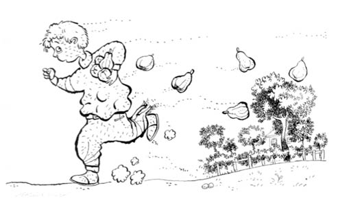

ŞERİF’İMİN MUHİTİ
Bir cuma akşamüstü evde, masa başındayız, haftanın bütün yorgunluğu üzerimizde. “Yarın Erdoğanlara gidiyoruz” dedi babam. Uzun zamandır istediğim ama yerleşme telaşından gerçekleşmeyen dileğimi nihayet babam söylüyordu; Şeriflerin yeni evine gidiyoruz! Cumartesi olacak ve biz yeni muhitinde civanımın evine gideceğiz.
O zamanlar telefon, mahalle muhtarlarının ve eşraftan bazı ileri gelenlerin evinde var sadece. İlla da falanca yakınımı arayacağım arkadaş dersen, gidiyorsun postaneye, veriyorsun numarayı, bekliyorsun iki saat, cazır cuzur konuşuyorsun. O nedenle Şerif’imi okul dışında arayıp konuşma şansı yok, önceden arayıp “Şunu yaparız, bunu ederiz” diyemiyorum.
Anlatmıştım, bizim Çekirge’deki ev meydana bakıyordu ve önünde dere gibi araba akan bir cadde vardı. Şişmiş, patlamak üzereyim (ilk kitaptan bilenler bilir; biz dünyayı seyretmez içine dalardık). Bir de bunların üzerine Kerbela gibi bir okul; bahçesi rüzgârda tozutan, tahtasını görmediğim ve su içmek için mataraya muhtaç olduğum. Şeriflere gidiyor olmak tüm bunların arasında çiçeğe su gibi geldi bana. Kardeşim öyle olur olmaz konuşan, gülen bir yapıya sahip değildir, o bile bu haber karşısında memnuniyetini yüzünden esirgemedi, dudağı hafifçe yana doğru kayıp “hıhı” şeklinde gülümsedi.
Zaman, böyle güzellikler öncesinde akmaz. Bekle baba bekle... Bir yandan aklımdan geçiriyorum; önce biraz top oynarız, sonra şunu asar bunu keseriz, diye. Sonra kendime geliyorum; her taraf cadde-araba! Bir tane ağaç yok ki tırmanasın. Şeriflerin evine gittiğimizde yapacak şeyler için hayal bile kuramayacak hâle getirmiş buradaki muhit beni. Hayallerim sararıp solmuş haftalar boyunca.
Bir sonbahar günü... Sabah oldu, hazırlandık, yola koyulduk. Babam, bir yere giderken önceden tarif alsa bile bulma özürlüdür. O yüzden ailecek hem tedbirli hem tedirginiz; ilk kez gidilen bir yer olduğundan, tarif de babama yapıldığından, boynumuz kıldan ince yolun kıyısından gidiyoruz. Önce caddenin karşısına geçtik, -bilenler bilir; Çekirge Meydanı’ndan askerî hastaneye doğru çıkan iki yokuş vardır, birisi bizim okulun önünden geçer, diğeri I. Murat Camisi’nin tarafındadır- cami tarafındaki yokuşa vurduk kendimizi. İçimde tatlı bir telaş; günlerdir isteyip de gerçekleştiremediğim bir şey nihayet oluyor.
Askerî hastanenin önüne vardık. Buraya kadarki yolu ailecek biliyoruz; Bursa’ya geldiğimizden beri iki kez aksırık öksürük için gelmişliğimiz var. Aşağı doğru inen yola devam ediyoruz. Sola, Doburca denen yere doğru saptık. “Buradan” dedi babam. “Hayırlısı” manasına gelecek seslerle hemen arkasında annem. Aytül bana yakın, takipteyiz. Neyse, yokuş aşağı indik. Yolun bitiminde babam sağa sola baktı, “Zahir buradan sapacağız” dedi. Annem anında tedirgin oldu, “Soralım birine” dedi. “Yav, ne soracağım, bir avuç yer” dedi babam. Bir avuç içinde üç beş sokağa girdik çıktık. Bu arada sağa sola bakıyorum at üstünde koşturan bir yiğit görür müyüm diye. Evi bulamayıp akşamı edersek gece yatıya kalır mıyız gibisinden anneme baktım, annem iç geçirerek kızarıp bozarıyordu.
Velhasıl babamın kaybolma dürtüsü galip geldi, sora sora Şeriflerin oturduğu sokağa vardık. Zaten civanım da meraklanır, sağa sola bakar dururmuş. Bizi görmesiyle nara basıp koşması bir oldu. Sarıldık koklaştık. Bizi hemen evlerine götürdü. Kapıdan girdik, şamata muhabbet. “Yav Ali’m, nerde kaldınız?” dedi Erdoğan Amcam. Babam, yiğitlik temiz kalsın diye bir şey sürmüyor, anca “Erdoğan’ım, giyin, hazırlan, çocuklar, falan derken...” diye lafı bağlıyor. Duyan da, çocuklar efendi olsalar, vaktinde hazırlansalar, adamcağız hiçbir sokağa boşu boşuna girip de gecikmeyecek zanneder.
Özleşmiş insanların lafları da birikmiş oluyor hâliyle. Herkes dengini buldu, konuşuyor. Bengül Abla her zaman olduğu gibi ortaya karışık sohbette. Onun yaşça dengi bizim evde yok çünkü, Kemal ve Rasih Amcaların onunla yaşıt kızları var Yıldız Abla.
Şerif’le dışarı fırlıyoruz. İlk dikkatimi çeken şey, ağaçlar; her taraf ağaç, bahçe. Demek şehrin bu tarafı yeşil. Demek bu konuda biz kazıklanmışız. Ömrüm boyunca ne zaman Bursa’daki ilk zamanların konusu açılsa, Erdoğan Amcamı takdir etmişimdir. Çayırın, çimenin olduğu İzmir’den kalkıp kırk aile Bursa’ya vardık. Oraya benzer tek yere Şerifler taşındılar ve ne taşınma! Bursa’dan gidene kadar da bir daha ev değiştirmediler. Sanki Erdoğan Amca, “Taşınırım, bir daha da ben istemeden çıkılmaz bu evden, zorlarsan da Şerif’i üstüne salarım” demiş gibi taşındılar oraya.
Günlerdir adını duyup rengini görmediğim yeşili burada gördüm nihayet. Sonbaharın güzel, ılık bir günü; etraf bağ bahçe. Yeni doğup çayıra salınmış sıpalar gibi nereye seyirteceğimizi bilmez hâlde başladık koşturmaya. Mahalledeki çocuklardan bir kısmıyla Şerif’imin arası iyi olduğundan hemen tanıştırdı beni; bazıları oynamaya değer kıvraklıktalar. Bir kısmı okuldan. Onlarla bilimsel ve akademik arkadaşlığı da var yiğidimin. Onlar da okuldan en az Şerif kadar nefret ettiklerinden hâliyle bir sıcaklık doğmuş aralarında. Laf lafı açtı, “Ayvaya dalalım mı? İster misin?” diye sordu Şerif.
“Şimdi bu da ne ola?” diyenler için; efendim ayvaya ya da söylenmiş herhangi bir meyveye dalmak demek, falanca muhitte yeterli miktarda soyulmaya müsait bir ayva bahçesi var demektir. Şerif bunu öyle bir edayla söylemişti ki, hani “Afrika’da safarideyim, gergedan vuralım mı?” ayarında bir teklif. Gelen ağır misafirlere sunulur ve her çocuğa kolay nasip olur bir şey değildir. Bir kere gelen kişi yeterli cevvallikte ve kıvraklıkta olacak, kaçarken yakalanıp rezil olunmayacak. Yiğitliği bu tarz bir talan için önceden bilinen ve yakalandığında çıtı çıkmayacak bir er kişi olması da cabası.
Bana orta yerde böyle bir teklif gelince mahalledeki çocuklar, breh breh, demek ayva talanında da namlı biriymiş bu gelen, gibisinden keyiflendiler. Hani görünüşte hımbıl değil, belli ki özünde de civanmert. Şerif de, “Bu teklif Ahmet varken başka kime bu kadar yakışır ki” manasında mahalledekilere baktı.
Vaziyet belli olmuştu. Bahçe; bilinen, talana müsait ve giden herkese yeteri kadar ayvanın olduğu ve belli ki şimdiye kadar da kimseyi mahcup etmemiş bir bahçe. Bazı bahçeler vardır, iti köpeği, çoluk çocuğu, bekçisi fazladır. Dalsan da kaçmak kolay değildir. Demek burası böyle değil. Bilen bilir; bir bahçeye dalmak için dört kişi olmak idealdir, üç kişi olmak azdır, beşinci fazladır. Sonuçta, yapılan bağ bozumu değil, talandır. Yakalanmamak esas olup, gözcünün de uyanık olması şarttır. Olabildiğince eli çabuk olmak ve kapabildiğin en kaliteli meyveyi almak makbul olandır. Bir de yağma sonrası ganimet dağıtılırken ortalamanın altında kalmamak esastır. Çürük, çarığı bol malla dönenle talana gitmek pek de hoş karşılanmaz. İzmir’den bilirim; Şerif’im biraz ağırkanlı olmakla birlikte malın iyisini dalın ucundan tanır. Gözü keskin, eli çabuktur. Özünde ağır olsa da cismen hafif çektiğinden dalın ucuna kadar gidebilir. Meyvenin hasını toplaması biraz da bundandır. Tarzan’ın çitasını yanına alsan, daha iyi ganimet bulmak kuşkuludur. Gerçi İzmir’de ayvaya dalmışlığımız olmamıştı. Lojmanda çağla ve bir iki tane de erik ağacı vardı. Geri kalanı palmiye ve çam olup, silah yapmaya yarardı. Bir de at arabasında meyve satan Ali vardı, anlatmıştım. Onu da bir kere yokladık, yemediğimiz dayak kalmamıştı annemden. Şerif lojmandaki çağlaları, sıkı yaprağın dalın arasından görür ve çekirge geçmişçesine toplardı. Demek benim göz bozukluğu o zamanlara dayanırmış, haberim yokmuş. Bursa’ya gelip de Meral’in defterine muhtaç olana kadar da anlamamışım.
Şerif’imin muhitini çok tutmuştum. Bağı bahçesi, kafa dengi arkadaşı çoktu. Bir de bu talan işi olunca haftalar sonra ilk defa bu kadar keyiflenmiştim. Avcılıkta olduğu gibi bu işte de esas olan maksat, heyecan yaşamaktır. Önemli olan, meyvenin başkasına ait olması ve yakalanma korkusuyla heyecan yaşayıp, iki lokma da olsa yiyebilmek. Manavda en olgunu en düzgünü varmış, hikâye.
Şerif, ben ve eli ayağı çabuk iki kişi daha Mutluevler’den Doburca tarafına doğru yürüyüşe geçtik. Hem yürüyoruz hem de Şerif gördüklerini anlatıyor. İki eliyle bir ayva tarifi yapıyor, Diyarbakır’da karpuz yağmalayacağız zannedilir. “Deme be Şerif’im” dedikçe kendinden geçiyor. “Yav, bunu koparması bir dert, taşıması ayrı dert” diye düşünmediysem Şerif’le çağla, badem koparmışlığımdandır.
Sonuçta bağ bahçelik yerler, sağa sola baka baka yürüyoruz. Nar ya da ayva sallanan ağaçlar olsa da, belli ki talan yerimiz buralar değil. Patikadan geçip taş ve dikenli tellerle çevrili bir bahçe kenarında durduk. Ağaçlar tellere on metre uzaktalar. Çevredeki herkesin bahçesi olduğundan kimse fazladan bir önlem almamış. Ne bir fazladan çit ne duvar görünüyor. Çocuklardan biri gözcü kaldı, tellerin ve böğürtlenlerin arasından seğirtip ağaçlara vardık. Bu ne berekettir, dala tırmanmaya gerek bile yok, dallar nerdeyse yere değecek. Birkaç tane anca topladık, kazakların içine dolduruyoruz. Kazakların alt kısmı pantolonların içinde olacak ki meyveler düşmesin. Bu arada duvarların, çitlerin olmayışının hikmeti belli oldu; neredeyse biz boylarda bir köpek bahçenin öte yanında havlamaya başladı. Şerifler tecrübeli, “Abi, tamamdır” deyip koşmaya başladılar. Anladım, zaman geldi; ben de tuttuğum son ayvayı yapraklarıyla koparıp kazağıma tıkıştırdım ve koşmaya başladım. Bir yandan köpek havlıyor, bir yandan koşuyorum. Tellerden hışımla geçerken yırtılma sesi; pantolonu kaptırdım. Kazağım ayva dolu, telden kurtuldum, aynı hızla civanım ve bizimle gelen çocukları da geçip eve doğru koşmaya devam ettim. Nefes nefese evin oraya vardık.
Sağ paçama kadar inen yırtık Şerif’in de dikkatini çekti. Ayvaları çıkardık paylaşıyoruz. Gerçekten de Şerif’in dedikleri kadar var. “Abi, köpekten bahsetmediniz” dedim. “Zaten bağlı, o hep havlar” dedi çocuklardan biri. Belli ki meseleyi daha önceden biliyorlar. Pantolonu bağlı köpek için kaptırdığımdan içim cız etse de artık renk vermedim. Sonuçta aylardır talana gitmemişlik var, belli ki vücut hamlamış. Çocuklar da, “olur bu kadarcık” manasında hak verdiler.
Eve vardık, Erdoğan Amcam kazağın duruşundan gizlediğim ganimeti anladı. Biraz terslenerek Şerif’e baktı. Civanım da sanki fikir benimmiş gibi bana ve kazağımdaki ganimete baktı. Oldum olası Erdoğan Amca bu talan işinden haz etmezdi. Oku, yayı, sapanı severdi de bu çalıp çırpma işleri aklına yatmazdı. Babam biraz daha ılıman olup, çocuklar için bahçelerdeki göz hakkına biraz daha sıcaktı.
Annem, göz hakkı işini Allah’a havale etmiş olup pantolondaki yırtıktan dolayı söylenme hakkını kullanıyordu. Sanem’e ve Aytül’e birer ayva verdik. Mayhoş olur ayva tabii, yüzleri buruştu hâliyle. Bengül Abla Şerif’e bakıp, “Gene çürük çarık getirmiştir, adam olmaz bu çocuk” manasında söylendi. Civanım ağzı ayvayla dolu olmasa, “böylesini manavda bile bulamazsın” anlamında bir şeyler söyler, emeğimizin hakkını verirdi kesinlikle. Yine de çıkardığı homurtudan ben anladım.
Haftalar sonrası, sofralar kuruldu, yemekler yenip çaylar içildi, biraz olsun hasret giderildi. Selam sabah, her türlü muhabbetin belini kırıp eve doğru yola çıktık. “Ali’m gene gelin” dedi Erdoğan Amca. Annem Gülten Teyze’ye, “Bekliyorum ha, arayı uzatmayın” dedi. Biz çocuklar zaten okulda görüştüğümüz için içimiz rahattı.
Şerif’imin muhitini anlatıp da Emirsultan’a taşınma faslımız anlatılmazsa zaten hikâyenin gerisi gelmez. E, o zaman durmak yok.